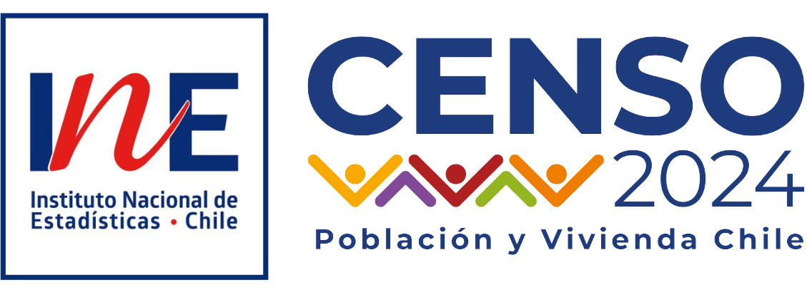
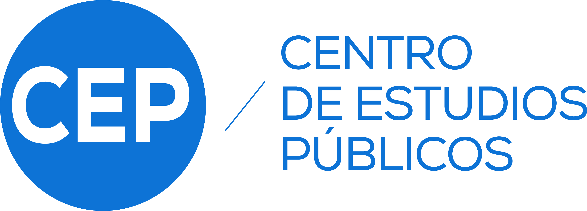
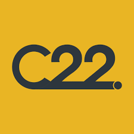

Experiencia en




Sociólogo · Analista de datos · Investigador
6 años transformando datos en decisiones para el sector público, privado y academia. Especializado en procesamiento y visualización de datos a gran escala con R, Python y Power BI, con una visión analítica y de comunicación estratégica. Dashboards, automatización de reportes y elaboración de indicadores basados en evidencia.
R · Python · Power BI R Markdown · Quarto ⚙️ Automatización 🤖 IA aplicada




Procesamiento, validación y análisis estadístico de datos complejos y a gran escala. Construcción de indicadores, modelamiento y visualización orientada a la toma de decisiones. R, Python y Power BI aplicados al sector público, privado y académico.
Diseño e implementación de ecosistemas de datos institucionales: captura, validación, visualización y comunicación. Trabajo con equipos mediante capacitaciones, automatización de procesos y generación de transparencia para la toma de decisiones.
Formulación y diseño de proyectos de investigación cuantitativos, cualitativos y mixtos. Aplicación de metodologías adecuadas, validación de instrumentos, revisión crítica de bibliografía y selección de estrategias óptimas. Procesamiento de censos y encuestas de gran escala con aseguramiento de calidad.
Elaboración de informes y reportes orientados a la asesoría y toma de decisiones basada en evidencia. Síntesis de investigación aplicada para instituciones públicas, privadas y centros de pensamiento.
Sistematización y visualización de indicadores educacionales para educación pública regional con R y Power BI. Diseño de gobernanza de datos institucional y construcción de un ecosistema de procesamientos y análisis de datos que permitieron reportería clara, ordenada y auditable mediante R Markdown y Power BI.
Análisis computacional del proceso constitucional chileno. Procesamiento de datos textuales y visualización política.
Analista metodológico Senior en el INE. Validación y aseguramiento de calidad de datos censales a gran escala. Análisis preliminares de datos, elaboración de informes regionales y análisis demográficos.
Consultoría estratégica de asuntos públicos. Boletín constitucional 2022, análisis político y proyectos de comunicación estratégica. Apoyo en distintos proyectos de consultoría con énfasis en análisis de datos para diagnóstico organizacional y estrategia.
Procesamiento, limpieza y análisis estadístico con R, Python y Power BI. Construcción de indicadores y reportes técnicos.
Diseño de dashboards interactivos y reportes visuales que transforman datos complejos en información clara para la toma de decisiones.
Diseño de ecosistemas de datos: estandarización, automatización de procesos, capacitación a equipos y transparencia institucional.
Datos electorales, seguimiento legislativo, indicadores de opinión pública y monitoreo de tendencias políticas.
Investigaciones cuantitativas, cualitativas o mixtas para diagnóstico organizacional, evaluación de programas y análisis de contexto.
Talleres de análisis de datos con R, Power BI y metodología cuantitativa para equipos de investigación e instituciones.
Diseño, validación y pilotaje de instrumentos de medición cuantitativa. Construcción de cuestionarios con escalas validadas, muestreo y estrategias de levantamiento para estudios de opinión y diagnóstico social.
Apoyo técnico en procesos de toma de decisiones para instituciones públicas y privadas. Síntesis de evidencia, análisis de escenarios y elaboración de recomendaciones fundamentadas en datos.
Auditoría y validación de análisis estadísticos: revisión de bases de datos, supuestos de modelos, consistencia de resultados e identificación de errores metodológicos en informes y estudios.
Frei, R., Cordero, R., Lang, B., Rozas, J., & Rodríguez, J. P. (2024). “Claims of ownership, claims of dignity: Moral narratives on the right to housing in Chile’s constitutional referendum”. Journal of Language and Politics, 23(5), 723–746.
¿Tienes un proyecto en mente? Estoy disponible para consultoría, análisis de datos e investigación. Escríbeme y conversamos.